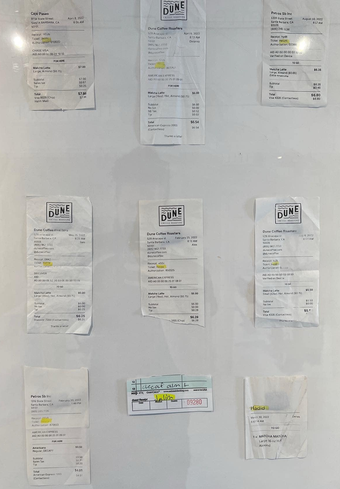
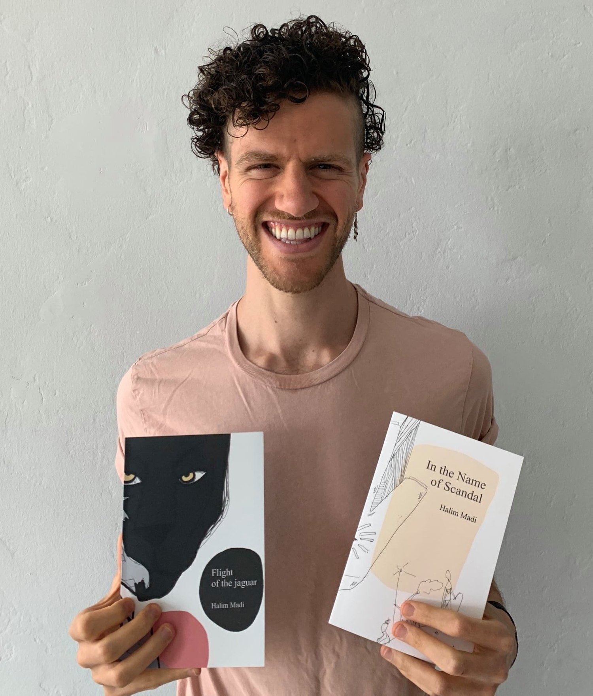
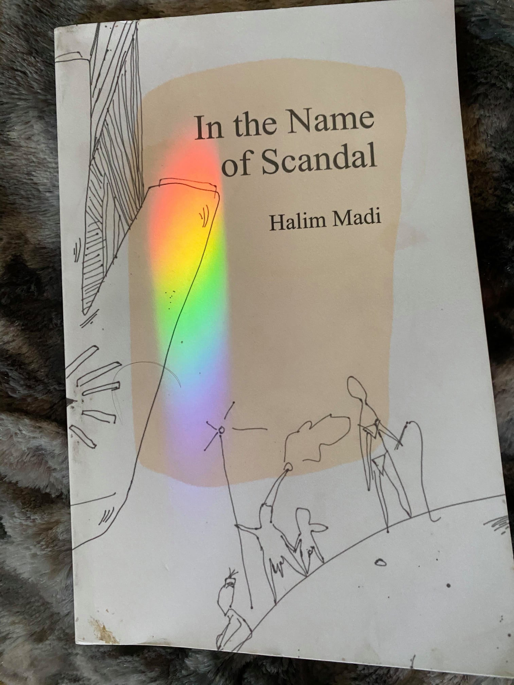
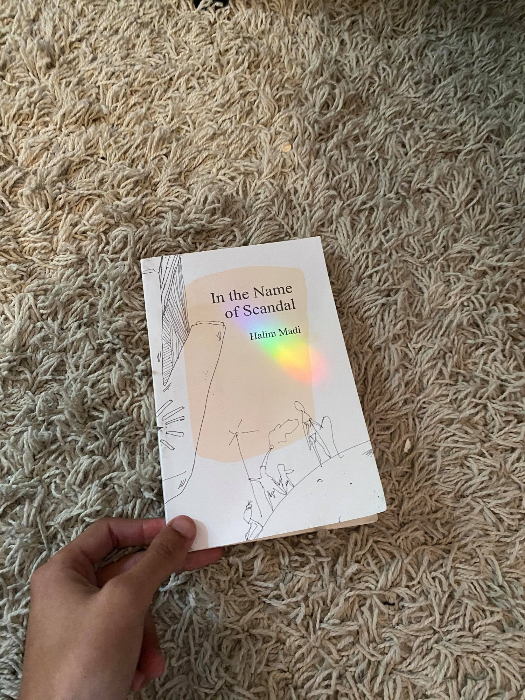
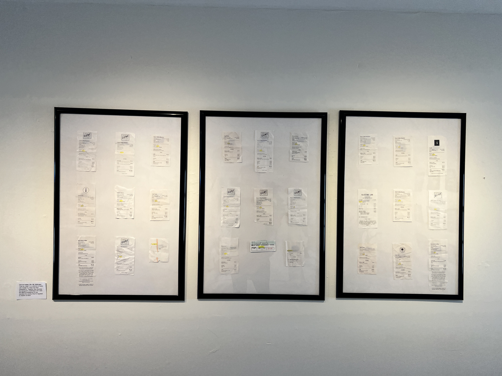
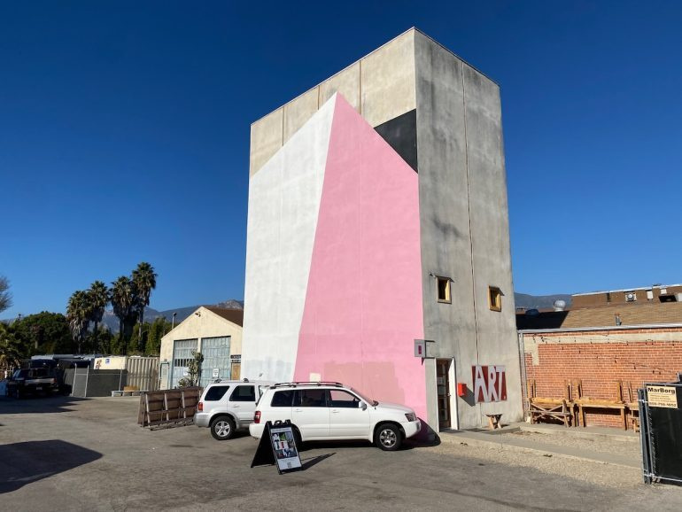
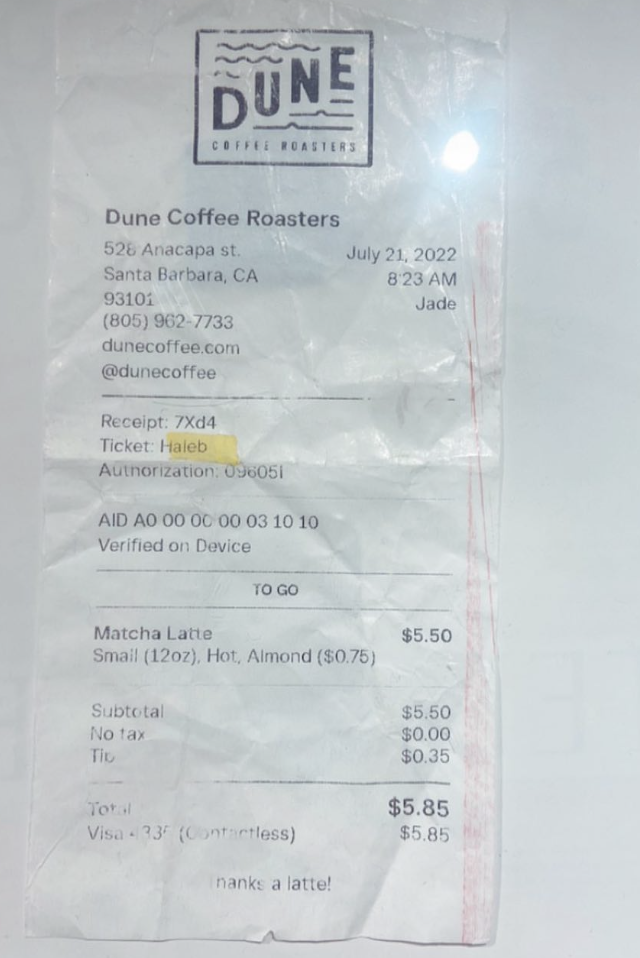
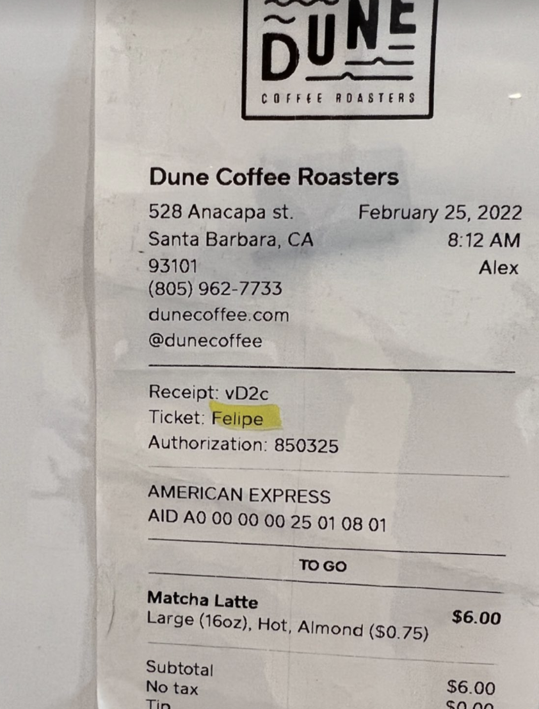
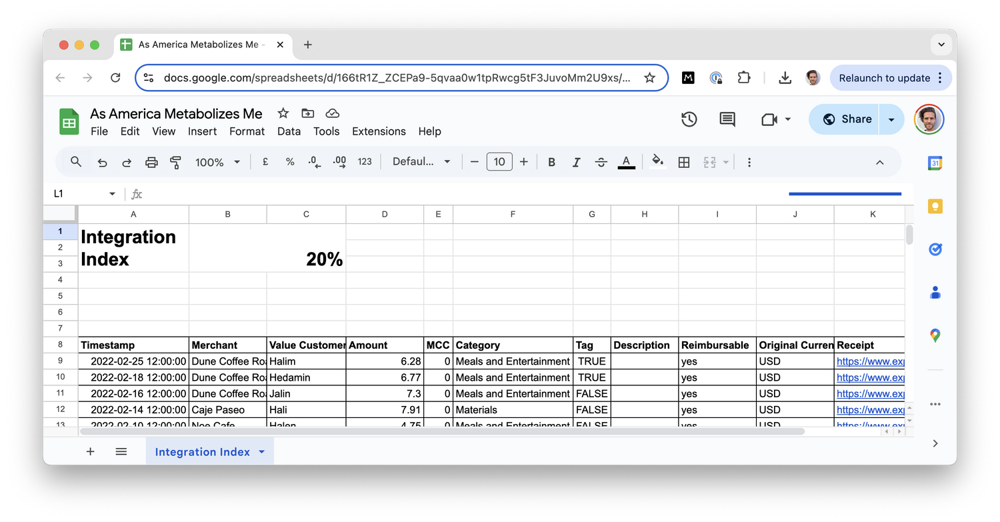

American Metabolisis









American Metabolisis is a multi-format work (part installation, part book, part computational index) chronicling how the immigrant body is absorbed, renamed, and reshaped by America. It began during the pandemic in Santa Barbara, where isolation from other migrants and queers exposed a question at the root of assimilation: what happens to language, and to self, when you are perpetually renamed?
In cafes across the city, my name, Halim, was continuously miswritten. Over two years, I became Helene, Felipe, Halib, Hadid, Heidi, Helum, Jalini. Each receipt was archived, logged into a spreadsheet, and transformed into what I called the Metabolization Index: the more often my name was spelled correctly, the higher the index. It stabilized at 20%. Assimilation, it seemed, had a ceiling.
This absurd data practice became Call Me Felipe, a triptych of archival receipts exhibited at Silo Gallery in 2021. Every misnaming became evidence of a slow, bureaucratic erasure - a poetry of paperwork, a study in linguistic mutation. The work merged statistical tracking with embodied ritual: each receipt a small autopsy of belonging.
In parallel, American Metabolisis extended into a written and computational corpus that examined plagiarism and cultural digestion as creative methods. What does it mean to metabolize another culture’s syntax? To eat language and be eaten by it? The immigrant’s life becomes a loop of ingestion and erasure - taking in, adapting, translating, leaking, remaking.
My name became data. My data became poem. The poem became evidence. The evidence became art.
The final assertion describes assimilation not as survival but as fermentation - a messy, microbial collaboration between self and empire. A slow digestion of power until something new, strange, and half-feral grows back.